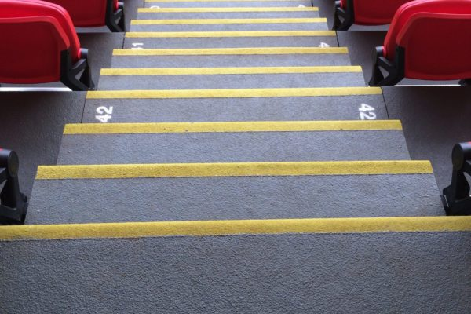

We are proud to have had the opportunity to help design a bespoke hybrid GRP system for the VIP area in Liverpool Football Clubs new main stand; Kenny Dalglish Stand. As a company we were privileged to be a part of the renovations of Anfield, a stadium of so much history.
The project was under major time constraints due to the system having to be installed in the off-season, giving us only three months to complete the project. A project on this scale had not been attempted before, but we were confident that it would be completed in time for the new season.
It began with the movement and installation of a modular steel framework as a structural base to place our bespoke anti-slip GRP sheets and treads onto. Once the GRP Sheets and Treads were secure, the stadia seats could then be installed into the modular GRP system.
We then carried out slip tests on-site to guarantee that our surfaces would comply with British regulations. The project was completed within 3 months ready for the season to kick off.
Do you have a project you want to discuss with us? We have supplied & installed many stair tread covers nationwide across a variety of industries (Rail, Stadia & Construction).
Contact us today by calling 01952 327577 or email us. We will be happy to help!